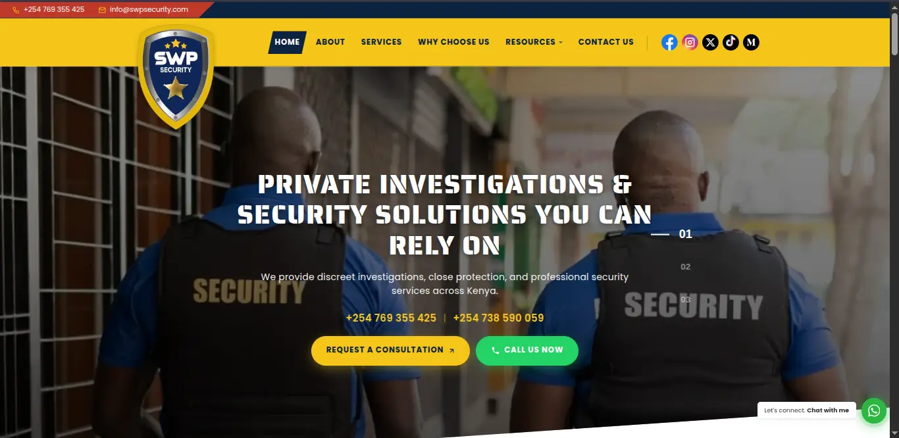
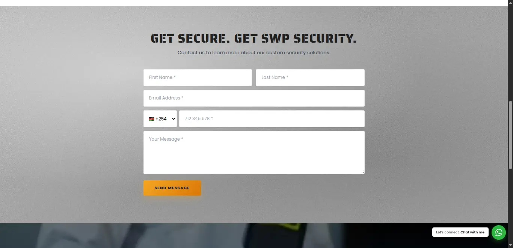
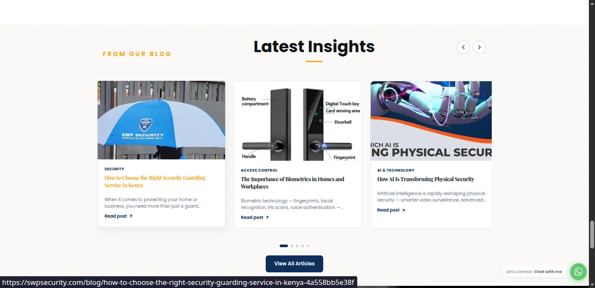
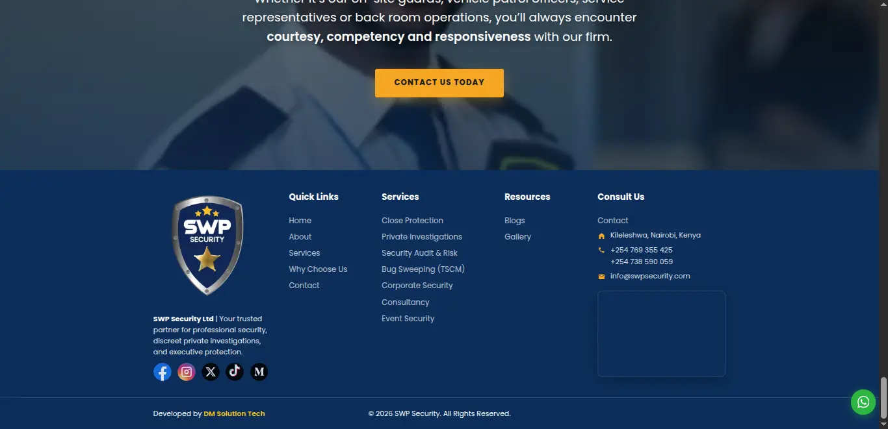

Live
SWP Security
Private investigations & security firm · Nairobi, Kenya
Full marketing-site build for a leading private investigations and security firm. Conversion-focused landing page, integrated lead funnel (WhatsApp + email), an in-house CMS so the team can publish security insights without my help, and SEO-tuned service pages that rank for local search terms.
- Lead Developer & Designer
- HTML · CSS · JS
- Custom CMS
- SEO & performance
- Lead-capture funnel
- Drives qualified consultation requests every week
- Self-serve blog publishing for the in-house team
- Mobile-first; fully responsive across devices



